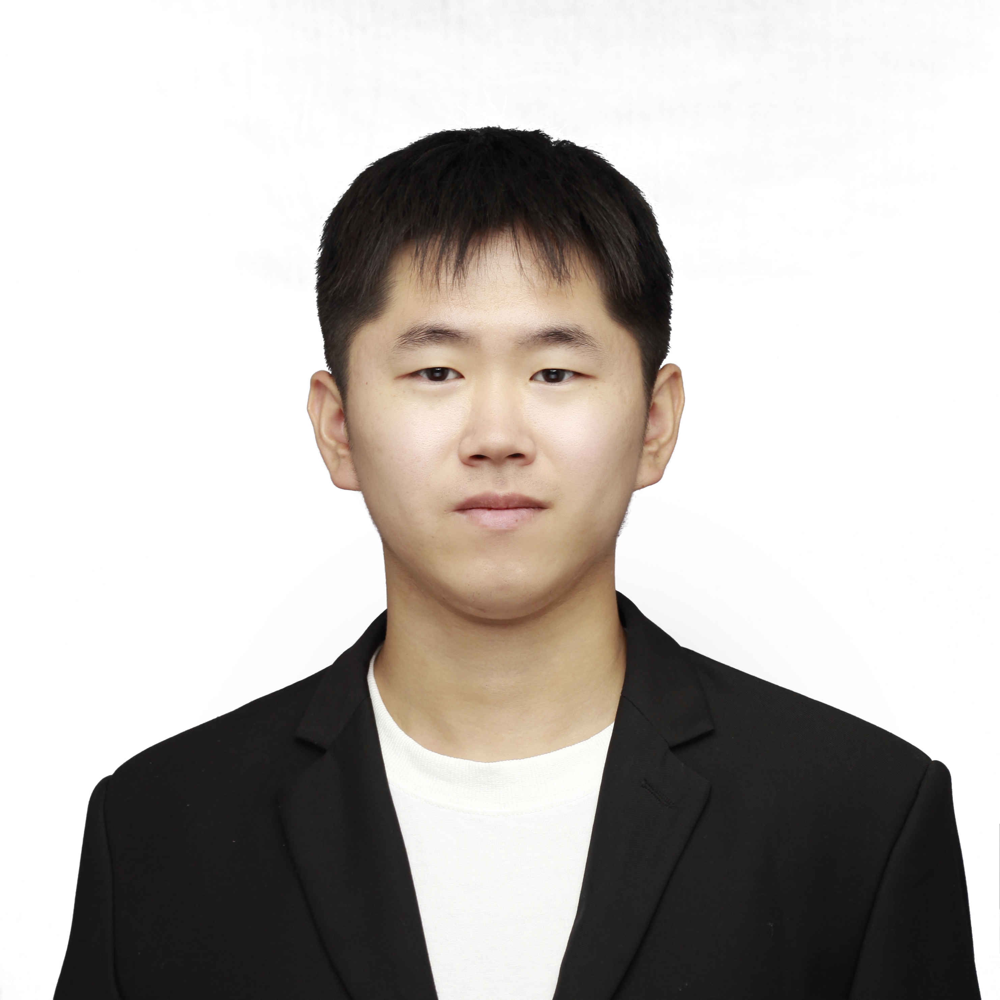

-
Mingcheng Wang (PhD. Student) - xxx

-
Haochi Wang (MSc. Student) - xxx

-
Ruizhe Yang (MSC. Student) - Ruizhe Yang is interested in MBSE domain modelling languages and engineering applications. His current research involves analysing and dealing with the management of heterogeneous system models in safety-critical systems. He endeavours to facilitate the interconnection and automated validation of different MBSE files or models by developing novel software tools.
-
Jiapeng Guan (MSc. student) - Jiapeng Guan is currently focused on the field of hardware-software co-design. His recent work primarily revolves around the temporal aspects of embedded GPUs and various accelerators, including design quantification and reliability. In the past, he has also worked on real-time analysis and fine-grained context switching for GPUs. His research aims to enhance the efficiency and dependability of embedded systems through innovative design and analysis techniques.